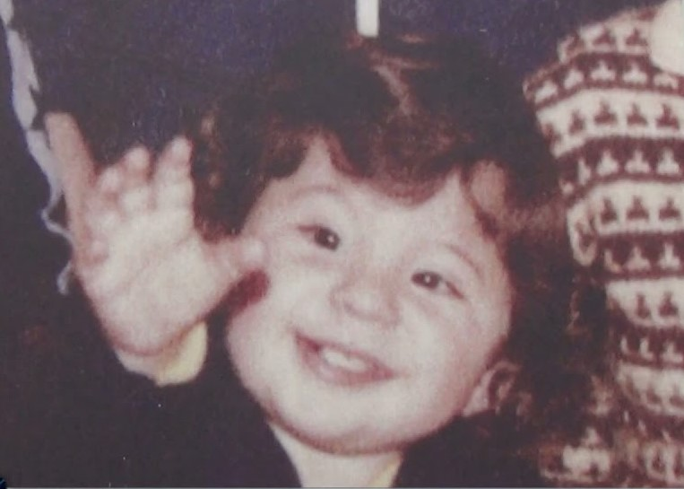
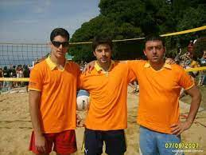
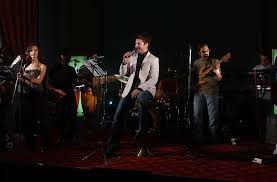
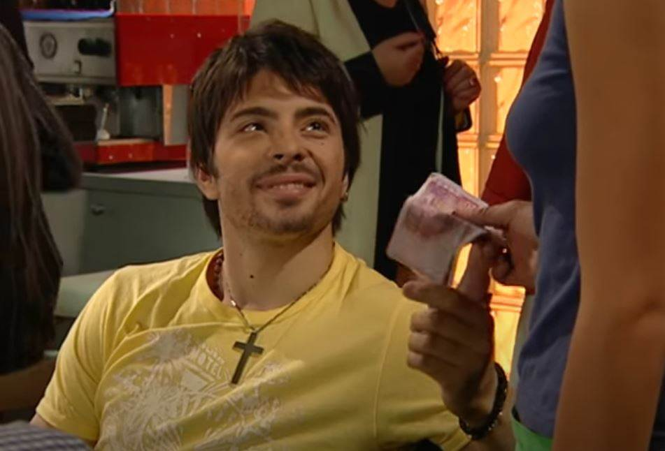
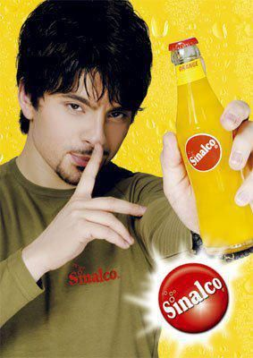
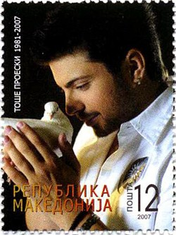
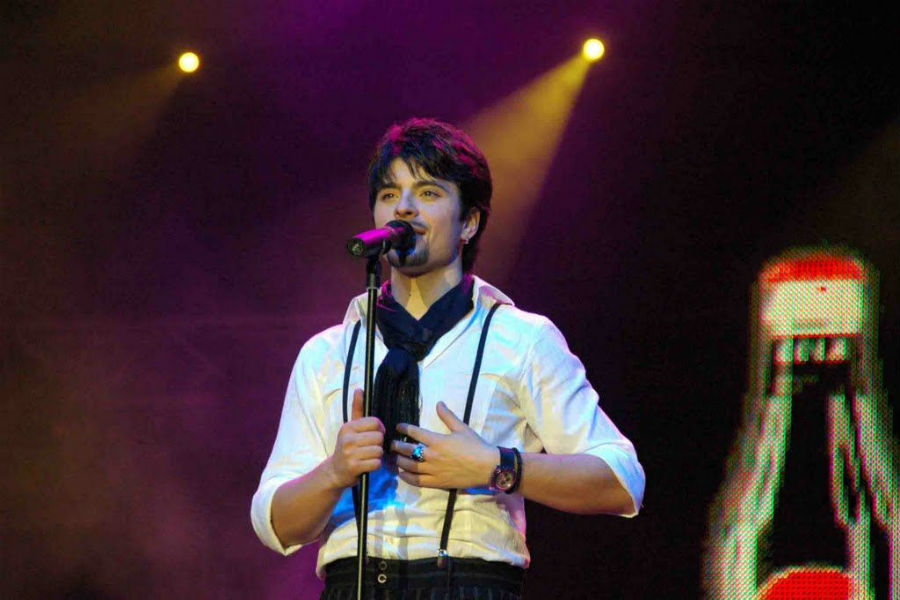
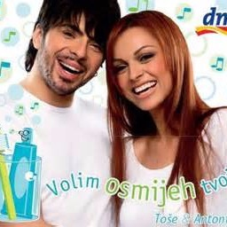

Име и презиме: Тодор Проески
Име ,,Тодор" значи ,,Божји дар"
Тошетово право презиме је Проја, али је његов деда променио презиме у Проески да би било у духу македонског језика. Тоше је планирао да врати презиме Проја и у једном интервјуу је рекао:,,...планирам да вратим старо презиме уколико решим да правим светску каријеру. Мислим да је странцима далеко лакше да изговоре и упамте Проја него Проески".
Надимак: Тоше, Балкански анђео, Македонски Павароти, Македонски Оливер Драгојевић, Балкански Елвис Присли, Балкански славуј...
Порекло: Тоше је рођен у Македонији али је био цинцарског порекла. Цинцари су романски народ који живи на Балканском полуострву.
Датум и време рођења: 25.01.1981. 11:15
Хороскопски знак и подзнак: Знак водолија, подзнак бик
Висина и тежина: 1,83m, 82kg
Омиљено доба године: Зима
Фобија: Летење авионом
Тоше није волео да путује и у једном интервјуу је рекао:,,Морам признати да је много напорно, нарочито путовања зато што мрзим да путујем. Добро би било да измислимо нешто за телепортирање..."
Спорт: Одбојка, кик-бокс и карате
Број дреса: 9
Назив његовог бенда: The blue funk individuals
Омиљени глумци: Никол Кидман и Расел Кроу
Глумио је у хрватској серији ,,Забрањена љубав" и у америчком филму ,,Миротворац".
Рекламирао је сокове ,,Sinalco", чоколадни намаз ,,Barpy", уље ,,Floriol", детарџент ,,Oliver".
Тоше није био раноранилац и волео је да спава до касно.
Македонска пошта је 15. децембра 2007. године у Крушеву представила поштанске маркице са Тошетовим ликом.
У кући је имао лустере као у цркви јер су га подсећали на мир који је имао у цркви.
Био је алергичан на поленов прах.
Био је најмлађи који је икад напунио Београдску арену.
Дует са Антонијом Шолом, "Волим осмијех твој" је био намењен DM-овој кампањи која је учила децу колико је важно да перу зубе. Поручивали су да се зуби требају прати 3 минута, колико и траје песма. Тоше је одбио да узме хонорар јер је сматрао да је то хуманитаран рад, што је изненадило организаторе ове кампање.
Због Тошетовог великог срца и хуманости Македонија је 25. јануар, односно његов рођендан, прогласила ,Даном хуманости". Промовисали су хуманитарну фондацију ,,Тодор Проески" која прикупља новац за помоћ младим талентованим певачима.
Био је први страни држављанин који је победио на Хрватском радио фестивалу.
Једна од његових последњих песама које је оставио, ,,Македонија навива за вас" , је проглашена за националну спортску химну.
Песма Кажу да време лечи све довршена је помоћу вештачке интелигенције и објављена на његов 43. рођендан, 25.01.2024.
Планира се објављивање још песама које је Тоше снимио али које нису биле довршене и објављене.
2024. је први пут емитован догументарни филм Једини: Сећање на Тошета, који се може погледати на следећем линку:
Једини: Сећање на Тошета
Провери своје знање помоћу квиза :)
Квиз о Тошету